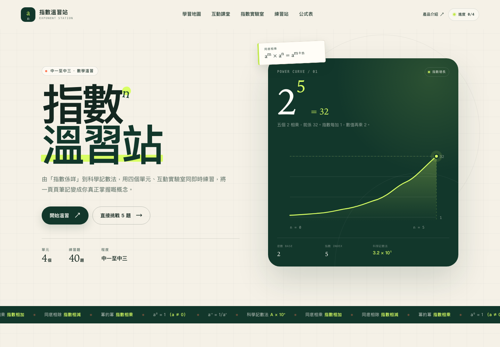

看得見的數學
拖動指數，看着 2⁵ 由 1 增長到 32。抽象規則變成可以觀察的變化。
學生原創學習產品 · 香港
適合中一至中三 · 免費使用
中一至中三 · 指數與科學記數法
由定義、定律到科學記數法：四個單元、互動實驗室與 40 題即時練習，將抽象規則變成看得見的推理。

01理念
不是再多一個題庫，而是一個讓規則變得可見、可試、可記住的學習空間。
指數最難的地方，往往不是計算，而是分辨幾時相加、幾時相乘，以及為甚麼 a⁰ 會等於 1。指數溫習站把每一步拆開，讓學生先看見規律，再建立信心。
先理解，後練習。
這是整個產品的設計起點。拖動指數，看着 2⁵ 由 1 增長到 32。抽象規則變成可以觀察的變化。
由底數與指數開始，逐層走到定律、負指數與科學記數法，不跳步。
每一題都有解釋與答案回顧，讓學生知道自己為甚麼錯，而不只是錯了幾題。
02產品功能
由第一條定義，到最後一次自我檢查，所有工具都放在同一個地方。
每個單元都有概念拆解、公式、例題、常見錯誤與一分鐘自測，讓學生按自己的節奏完成。
自由選擇底數與指數，即時觀察展開式、數值、科學記數法與增長圖表。
2⁵ = 2 × 2 × 2 × 2 × 2 = 32
自選範圍與題量，每題即時批改並附完整解釋；完成後有成績與錯題回顧。
單元完成度、最佳成績與累積答對題數自動儲存在瀏覽器，下次回來即可繼續。
整理齊全的指數速查表，適合列印貼在書桌前，或儲存成 PDF 溫習。
同一個平台，在手機、平板與桌面都保持清晰。無論自學、課堂示範或家長伴讀，都可以即開即用。
03課程範圍
對應香港初中數學課程中的指數與科學記數法單元。點擊任何單元，直接跳到學習平台開始。
分清楚底數、指數與冪，理解重複相乘的意義。
同底相乘、同底相除、冪的冪，以及積與商的次方。
用規律解釋 a⁰ = 1，理解負指數就是倒數。
以 A × 10ⁿ 表示極大與極小的數，並進行乘除運算。
每個單元約 6–9 分鐘，附例題、易錯位與自測。
05如何使用
不需要老師在旁設定，也不需要建立帳戶。打開網站，就可以開始。
STEP 01
由最需要鞏固的概念開始。四個單元可以按任何次序重溫。
STEP 02
在指數實驗室改變底數與指數，將抽象公式變成眼前變化的數字。
STEP 03
用即時練習檢查理解。每題都有解釋，錯題會保留在成績回顧中。
07常見問題
關於這個學習平台，你可能想知的事。
完全免費。指數溫習站是一個學生原創的學習項目，沒有訂閱、付款或隱藏收費。
不需要。打開網站就可以使用；學習進度會自動儲存在你的瀏覽器。
主要為中一至中三學生而設，對應香港初中數學課程的指數與科學記數法單元。
學習平台的課程與題目以繁體中文編寫，配合香港初中課堂；這個產品介紹網站則提供繁體中文及英文版本。
進度只儲存在你的瀏覽器 localStorage，不會上傳到伺服器。更換裝置或清除瀏覽器資料後，進度會重新開始。
指數溫習站由 3A 陳穎霖設計及開發，涵蓋內容、視覺設計與前端程式。